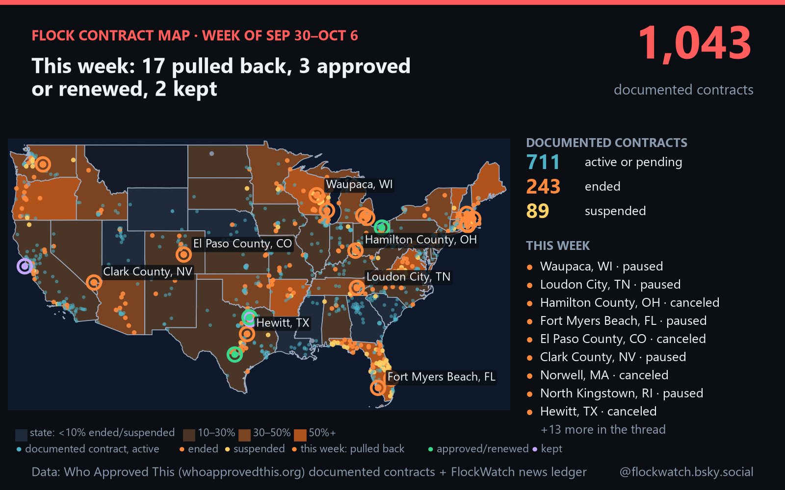

A neutral, sourced record of what US cities, counties and agencies decide about Flock Safety license-plate cameras: cancellations and pauses, approvals, renewals and votes to keep them. Every entry links to its source. Automated by JD Media, LLC; not affiliated with Flock Safety.

| Date | Place | Decision | Source |
|---|
Decisions are collected from local news headlines several times a day and extracted by an AI model. An entry is kept only when the headline itself reports a completed decision by a named US jurisdiction, and the quoted wording must match the decision type (for example, "dropped support" is not counted as a cancellation). One decision per place per week is counted. Each Sunday a second AI model checks the weekly post against these records before it is published. Status changes in the documented-contract baseline are also recorded with their primary source.
Baseline counts of documented contracts come from Who Approved This, an independent public-records project. Its records are not republished here. Flock Safety has more customers than any public tally documents, so these numbers describe documented contracts, not every deployment.
If an entry is wrong, tell us and we'll fix it and say so publicly: reply to or mention @flockwatch.bsky.social, or open an issue. Please include a link to the record or report.